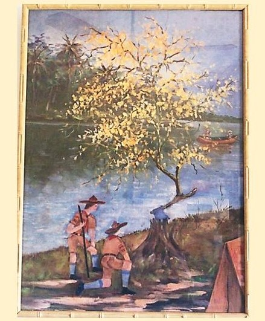
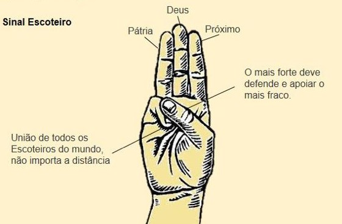

Simbologia G.E. Terra da Saudade
A lenda da árvore que renasce do cabo do machado que a cortou é umsímbolo utilizado pelo escotismo. Assim como a Fênix, da mitologia grega (que renasce das cinzas do fogo que a consumiu), significa resiliência, fé, esperança, renascimento. Que todo fim de um ciclo acaba sendo o começo de outro e que não devemos nos abater frente as adversidades. Está intimamente relacionado ao nome "Terra da saudade" uma vez que "saudade" representa um fim de um ciclo e início de outro, que a vida continua, mas o que é bom, permanece no coração.
Escotismo
Fundado em 1907, na Inglaterra, por BadenPowell, é um movimento educacional de jovens que conta com a colaboração de adultos, valoriza a participação de todas as origens sociais, raças e credos e se configura como a maior organização mundial de voluntariado em prol da educação. Sua principal característica é se tratar de um movimento que envolve as famílias em seu dia a dia. É uma organização sem fins lucrativos que desenvolve trabalhos de educação continuada de crianças e jovens, valorizando o equilíbrio ambiental e o desenvolvimento social na formação de cidadãos conscientes e atuantes. Reconhecida como de utilidade pública por meio do Decreto Federal no 3.297/17 e como instituição de educação extra escola pela Lei no 8.828/46. O Movimento Escoteiro é uma organização mundial que trabalha a fé e a espiritualidade nos jovens, sem abordar uma única religião específica. O Escotismo incentiva, desde sua fundação, em 1907, o desenvolvimento espiritual de seus jovens e adultos, encorajando-os a viver sua opção religiosa de forma plena, independente de qual seja sua crença.
Promessa
Prometo pela minha honra fazer o melhor possível para: Cumprir meus deveres para com Deus e minha Pátria; judar o próximo em toda e qualquer ocasião; Obedecer à lei Escoteira.
Leis Escoteiras
- O Escoteiro tem uma só palavra; sua honra vale mais do que a própria vida.
- O Escoteiro é leal.
- O Escoteiro está sempre alerta para ajudar o próximo e praticar diariamente uma boa ação.
- O Escoteiro é amigo de todos e irmão dos demais Escoteiros.
- O Escoteiro é cortês.
- O Escoteiro é bom para os animais e plantas.
- O Escoteiro é obediente e disciplinado.
- O Escoteiro é alegre e sorri nas dificuldades.
- O Escoteiro é econômico e respeita o bem alheio.
- O Escoteiro é limpo de corpo e alma.